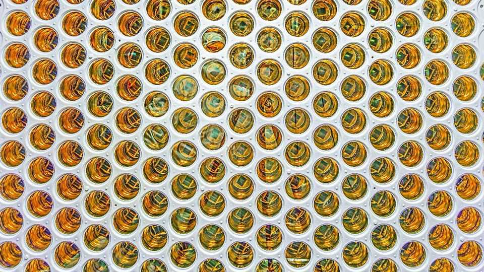

A suspicious signal in a dark-matter detector has physicists excited
It may be nothing. But it may be something big

Sep 3rd 2026
ON JUNE 16TH 2023 a strange blip showed up in the detectors of the LUX-ZEPLIN (LZ) experiment, an underground dark-matter detector (pictured) in South Dakota. That should raise eyebrows. Physicists have been trying and failing to detect dark matter for almost a century. Speaking on the experiment’s behalf at the TeV Particle Astrophysics conference on September 1st, Sam Eriksen of the University of Bristol announced that the team has reason to believe the blip could be a “weakly interacting massive particle” (WIMP), a long-suspected candidate for the universe’s elusive dark matter.
Physicists are pretty sure dark matter exists. Their best measurements suggest it makes up around 85% of the universe’s total mass and is responsible for a number of important jobs, such as making sure galaxies do not break apart. But nothing is known of what the stuff is actually made from. It does not emit, absorb or reflect light or other electromagnetic radiation, and is “seen” only by its gravitational pull.
Over the years, physicists have come up with a motley crew of suspects that could be behind the phenomena. WIMPs are one of the most promising. These hypothetical heavy, sluggish particles interact with other matter only through gravity and an esoteric phenomenon called the weak nuclear force. The theory suggests such particles could have been knocking about soon after the Big Bang. But as the universe expanded and cooled, their abundance was frozen at just the right value to give the density of dark matter seen today.
The LZ experiment has been hunting WIMPs since 2021 using a vat of seven tonnes of liquid xenon. As particles pass through this vat they collide with the xenon atoms, releasing flashes of light. Most matter will recoil from xenon’s electrons, but WIMPs should bounce off its nucleus. Such a “nuclear recoil” emits its own signature flashes. Dr Eriksen says the flashes the team saw in 2023 have all the hallmarks of a WIMP at least 200 times heavier than a proton.
The case is not closed. The suspected WIMP was spotted only once and with a level of certainty that does not meet the bar to be called an actual discovery in physics circles. But it is the first time any WIMP-detection experiment has seen anything of this magnitude, Dr Eriksen says. And for something as elusive as dark matter, that is certainly enough to warrant attention. ■